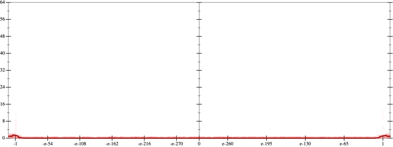
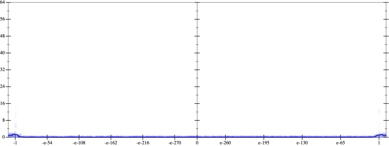
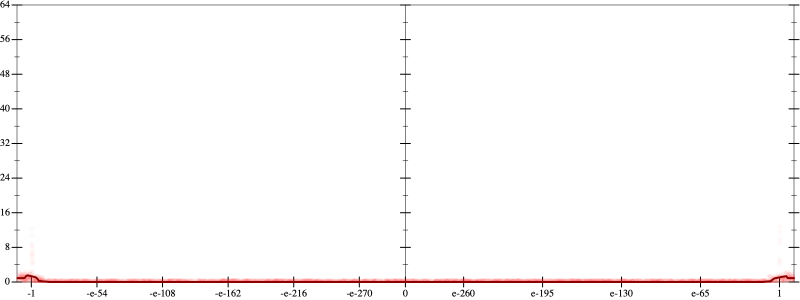
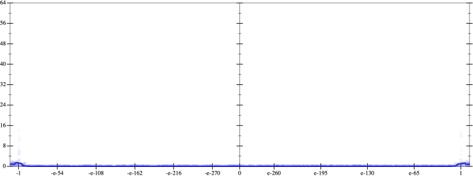

Initial program 0.1
\[\left(\left(\left(\left(\left(\left(-3.14209 \cdot x + 124.63623 \cdot \left(\left(x \cdot x\right) \cdot x\right)\right) + -1420.853027 \cdot \left(\left(\left(\left(x \cdot x\right) \cdot x\right) \cdot x\right) \cdot x\right)\right) + 7104.265137 \cdot \left(\left(\left(\left(\left(\left(x \cdot x\right) \cdot x\right) \cdot x\right) \cdot x\right) \cdot x\right) \cdot x\right)\right) + -18155.344238 \cdot \left(\left(\left(\left(\left(\left(\left(\left(x \cdot x\right) \cdot x\right) \cdot x\right) \cdot x\right) \cdot x\right) \cdot x\right) \cdot x\right) \cdot x\right)\right) + 24757.287598 \cdot \left(\left(\left(\left(\left(\left(\left(\left(\left(\left(x \cdot x\right) \cdot x\right) \cdot x\right) \cdot x\right) \cdot x\right) \cdot x\right) \cdot x\right) \cdot x\right) \cdot x\right) \cdot x\right)\right) + -17139.660645 \cdot \left(\left(\left(\left(\left(\left(\left(\left(\left(\left(\left(\left(x \cdot x\right) \cdot x\right) \cdot x\right) \cdot x\right) \cdot x\right) \cdot x\right) \cdot x\right) \cdot x\right) \cdot x\right) \cdot x\right) \cdot x\right) \cdot x\right)\right) + 4733.811035 \cdot \left(\left(\left(\left(\left(\left(\left(\left(\left(\left(\left(\left(\left(\left(x \cdot x\right) \cdot x\right) \cdot x\right) \cdot x\right) \cdot x\right) \cdot x\right) \cdot x\right) \cdot x\right) \cdot x\right) \cdot x\right) \cdot x\right) \cdot x\right) \cdot x\right) \cdot x\right)\]
Taylor expanded around 0 0.1
\[\leadsto \left(\left(\left(\left(\left(\left(-3.14209 \cdot x + \color{blue}{124.63623 \cdot {x}^{3}}\right) + -1420.853027 \cdot \left(\left(\left(\left(x \cdot x\right) \cdot x\right) \cdot x\right) \cdot x\right)\right) + 7104.265137 \cdot \left(\left(\left(\left(\left(\left(x \cdot x\right) \cdot x\right) \cdot x\right) \cdot x\right) \cdot x\right) \cdot x\right)\right) + -18155.344238 \cdot \left(\left(\left(\left(\left(\left(\left(\left(x \cdot x\right) \cdot x\right) \cdot x\right) \cdot x\right) \cdot x\right) \cdot x\right) \cdot x\right) \cdot x\right)\right) + 24757.287598 \cdot \left(\left(\left(\left(\left(\left(\left(\left(\left(\left(x \cdot x\right) \cdot x\right) \cdot x\right) \cdot x\right) \cdot x\right) \cdot x\right) \cdot x\right) \cdot x\right) \cdot x\right) \cdot x\right)\right) + -17139.660645 \cdot \left(\left(\left(\left(\left(\left(\left(\left(\left(\left(\left(\left(x \cdot x\right) \cdot x\right) \cdot x\right) \cdot x\right) \cdot x\right) \cdot x\right) \cdot x\right) \cdot x\right) \cdot x\right) \cdot x\right) \cdot x\right) \cdot x\right)\right) + 4733.811035 \cdot \left(\left(\left(\left(\left(\left(\left(\left(\left(\left(\left(\left(\left(\left(x \cdot x\right) \cdot x\right) \cdot x\right) \cdot x\right) \cdot x\right) \cdot x\right) \cdot x\right) \cdot x\right) \cdot x\right) \cdot x\right) \cdot x\right) \cdot x\right) \cdot x\right) \cdot x\right)\]
Applied simplify0.1
\[\leadsto \color{blue}{\left(\left(\left(x \cdot x\right) \cdot \left(x \cdot x\right)\right) \cdot \left({x}^{3} \cdot \left({x}^{3} \cdot {x}^{3}\right)\right)\right) \cdot \left(\left(x \cdot x\right) \cdot 4733.811035 + -17139.660645\right) + \left(\left(\left({x}^{3} \cdot \left({x}^{3} \cdot {x}^{3}\right)\right) \cdot \left(24757.287598 \cdot \left(x \cdot x\right) + -18155.344238\right) + \left(x \cdot x\right) \cdot \left(124.63623 \cdot x\right)\right) + \left(\left(-3.14209 \cdot x + \left(x \cdot -1420.853027\right) \cdot \left(\left(x \cdot x\right) \cdot \left(x \cdot x\right)\right)\right) + \left(\left(x \cdot 7104.265137\right) \cdot \left(x \cdot x\right)\right) \cdot \left(\left(x \cdot x\right) \cdot \left(x \cdot x\right)\right)\right)\right)}\]
- Using strategy
rm Applied flip3-+0.1
\[\leadsto \left(\left(\left(x \cdot x\right) \cdot \left(x \cdot x\right)\right) \cdot \left({x}^{3} \cdot \left({x}^{3} \cdot {x}^{3}\right)\right)\right) \cdot \color{blue}{\frac{{\left(\left(x \cdot x\right) \cdot 4733.811035\right)}^{3} + {-17139.660645}^{3}}{\left(\left(x \cdot x\right) \cdot 4733.811035\right) \cdot \left(\left(x \cdot x\right) \cdot 4733.811035\right) + \left(-17139.660645 \cdot -17139.660645 - \left(\left(x \cdot x\right) \cdot 4733.811035\right) \cdot -17139.660645\right)}} + \left(\left(\left({x}^{3} \cdot \left({x}^{3} \cdot {x}^{3}\right)\right) \cdot \left(24757.287598 \cdot \left(x \cdot x\right) + -18155.344238\right) + \left(x \cdot x\right) \cdot \left(124.63623 \cdot x\right)\right) + \left(\left(-3.14209 \cdot x + \left(x \cdot -1420.853027\right) \cdot \left(\left(x \cdot x\right) \cdot \left(x \cdot x\right)\right)\right) + \left(\left(x \cdot 7104.265137\right) \cdot \left(x \cdot x\right)\right) \cdot \left(\left(x \cdot x\right) \cdot \left(x \cdot x\right)\right)\right)\right)\]
Applied associate-*r/0.1
\[\leadsto \color{blue}{\frac{\left(\left(\left(x \cdot x\right) \cdot \left(x \cdot x\right)\right) \cdot \left({x}^{3} \cdot \left({x}^{3} \cdot {x}^{3}\right)\right)\right) \cdot \left({\left(\left(x \cdot x\right) \cdot 4733.811035\right)}^{3} + {-17139.660645}^{3}\right)}{\left(\left(x \cdot x\right) \cdot 4733.811035\right) \cdot \left(\left(x \cdot x\right) \cdot 4733.811035\right) + \left(-17139.660645 \cdot -17139.660645 - \left(\left(x \cdot x\right) \cdot 4733.811035\right) \cdot -17139.660645\right)}} + \left(\left(\left({x}^{3} \cdot \left({x}^{3} \cdot {x}^{3}\right)\right) \cdot \left(24757.287598 \cdot \left(x \cdot x\right) + -18155.344238\right) + \left(x \cdot x\right) \cdot \left(124.63623 \cdot x\right)\right) + \left(\left(-3.14209 \cdot x + \left(x \cdot -1420.853027\right) \cdot \left(\left(x \cdot x\right) \cdot \left(x \cdot x\right)\right)\right) + \left(\left(x \cdot 7104.265137\right) \cdot \left(x \cdot x\right)\right) \cdot \left(\left(x \cdot x\right) \cdot \left(x \cdot x\right)\right)\right)\right)\]
Taylor expanded around 0 31.5
\[\leadsto \frac{\color{blue}{\left(e^{3 \cdot \left(2 \cdot \log x + \log 4733.811035\right)} - 5035083263193.108\right) \cdot {x}^{13}}}{\left(\left(x \cdot x\right) \cdot 4733.811035\right) \cdot \left(\left(x \cdot x\right) \cdot 4733.811035\right) + \left(-17139.660645 \cdot -17139.660645 - \left(\left(x \cdot x\right) \cdot 4733.811035\right) \cdot -17139.660645\right)} + \left(\left(\left({x}^{3} \cdot \left({x}^{3} \cdot {x}^{3}\right)\right) \cdot \left(24757.287598 \cdot \left(x \cdot x\right) + -18155.344238\right) + \left(x \cdot x\right) \cdot \left(124.63623 \cdot x\right)\right) + \left(\left(-3.14209 \cdot x + \left(x \cdot -1420.853027\right) \cdot \left(\left(x \cdot x\right) \cdot \left(x \cdot x\right)\right)\right) + \left(\left(x \cdot 7104.265137\right) \cdot \left(x \cdot x\right)\right) \cdot \left(\left(x \cdot x\right) \cdot \left(x \cdot x\right)\right)\right)\right)\]
Applied simplify0.1
\[\leadsto \color{blue}{\left(\left(\left(\left(x \cdot x\right) \cdot \left(x \cdot 124.63623\right) + x \cdot -3.14209\right) + \left(\left(x \cdot x\right) \cdot \left(x \cdot x\right)\right) \cdot \left(x \cdot -1420.853027 + \left(x \cdot x\right) \cdot \left(x \cdot 7104.265137\right)\right)\right) + \frac{\left(-5035083263193.108\right) \cdot {x}^{13} + {x}^{\left(3 \cdot 2\right)} \cdot \left({4733.811035}^{3} \cdot {x}^{13}\right)}{\left(-17139.660645 \cdot -17139.660645 - \left(-17139.660645 \cdot x\right) \cdot \left(x \cdot 4733.811035\right)\right) + \left(\left(x \cdot 4733.811035\right) \cdot x\right) \cdot \left(\left(x \cdot 4733.811035\right) \cdot x\right)}\right) + \left(-18155.344238 + \left(x \cdot x\right) \cdot 24757.287598\right) \cdot {\left({x}^{3}\right)}^{3}}\]
 
